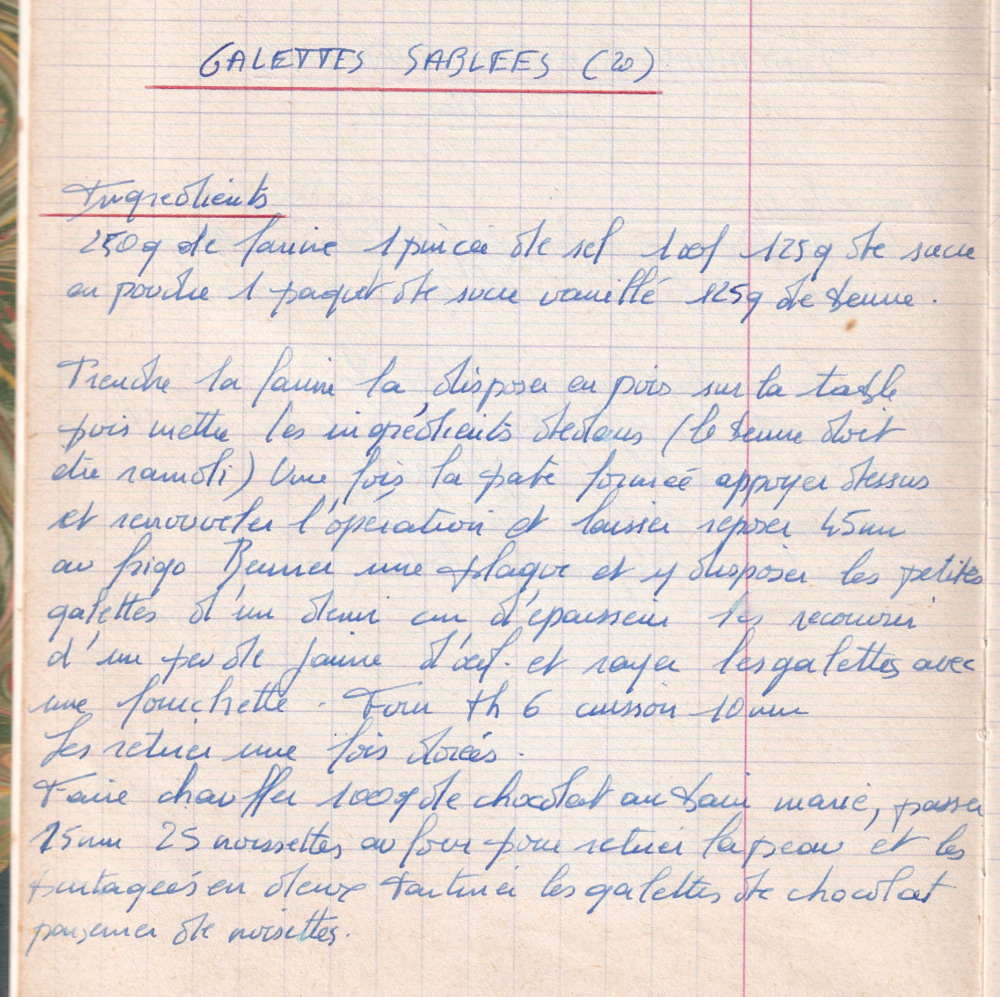

Galettes sablées (20)

LISTE DES INGREDIENTS
- 250gr de farine
- 1 pincée de sel
- 1 oeuf
- 125gr de sucre en poudre
- 1 paquet de sucre vanillé
- 125gr de beurre
PREPARATION
- Prendre la farine la disposer en puits sur la table puis mettre les ingrédients dedans (Le beurre doit être ramolli)
- Une fois la pate formée appuyer dessus et renouveler l'opération
- Laisser reposer 45min au frigo
- Beurrer une plaque et y disposer les petites galette d'un demi cm d'épaisseur
- Les recouvrir d'un peu de farine d'oeuf et rayer les galettes avec une fourchette
- Four thermostat 6 cuisson 10min
- Les retirer une fois dorées
- Faire chauffer 100gr de chocolat au bain marie
- Passer 15 ou 25 noisettes ay four pour retirer la peau et les partager en deux
- Tartiner les galettes de chocolat et parsemer les noisettes